- время; - пропорциональный коэффициент (безразмерный), постоянная интегрирования (размерность времени) и постоянная дифференцирования (размерность времени) регулятора, то такой регулятор называют ПИД-регулятором.
- время; - пропорциональный коэффициент (безразмерный), постоянная интегрирования (размерность времени) и постоянная дифференцирования (размерность времени) регулятора, то такой регулятор называют ПИД-регулятором. Классический ПИД-регулятор
Простейшая система автоматического регулирования с обратной связью показана на рис. 5.34. В ней блок называют регулятором (от слова Regulator), - объектом регулирования (от слова Process), r - управляющим воздействием или уставкой (reference), e - сигналом рассогласования или ошибки (error), u - выходной величиной регулятора, y - регулируемой величиной.
Если выходная переменная u регулятора описывается выражением
|
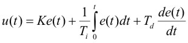 |
(5.36) |
где - время; - пропорциональный коэффициент (безразмерный), постоянная интегрирования (размерность времени) и постоянная дифференцирования (размерность времени) регулятора, то такой регулятор называют ПИД-регулятором.
В частном случае пропорциональная, интегральная или дифференциальная компоненты могут отсутствовать и такие упрощенные регуляторы называют П, И или ПИ регуляторами.
Распространены также следующие модификации выражения (5.36):
|
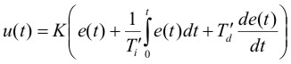 |
(5.37) |
|
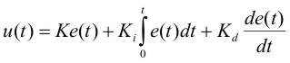 |
(5.38) |
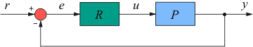
Рис. 5.34. ПИД-регулятор в системе с обратной связью
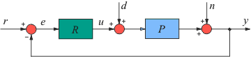
Рис. 5.35. ПИД-регулятор в системе с шумом n и внешними возмущениями d
Между параметрами выражений (5.36) - (5.38) существует простая связь. Однако отсутствие общепринятой системы параметров часто приводит к путанице. Это нужно помнить при замене одного ПИД контроллера на другой, при задании его параметров или использовании программ настройки параметров. Мы будем пользоваться выражением (5.36).
Следует подчеркнуть, что входом объекта управления на всех рисунках является выход регулятора, т.е. величина u, которая в соответствии c (5.36)-(5.38) и рис. 5.34 имеет ту же размерность, что и рассогласование e, выходная величина y и уставка r. Т.е., если объект управляется, например, ШИМ-регулятором, током, или частотой вращения вала, во всех этих случаях управляющей величиной является u, а в модель объекта управления P следут ввести преобразователь величины u в ширину импульса ШИМ-регулятора, в ток или в частоту вращения вала соответственно. Это надо учитывать также при задании входного воздействия в экспериментах для настройки регулятора (см. раздел "Расчет параметров"). Таким воздействием во всех случаях должна быть величина u (выходная величина регулятора).
Используя преобразование Лапласа при нулевых начальных условиях u(0)=0 , выражение (5.36) можно представить в операторной форме:
|
(5.39) |
Таким образом, передаточная функция ПИД-регулятора имеет вид
|
(5.40) |
Амплитудно-частотная и фазо-частотная характеристика передаточной функции (5.40) при параметрах =1 с,  =1 с, =10 показаны на рис. 5.36. Переходная характеристика ПИД-регулятора (реакция на единичный скачок) представляет собой сумму постоянной составляющей , прямой линии
=1 с, =10 показаны на рис. 5.36. Переходная характеристика ПИД-регулятора (реакция на единичный скачок) представляет собой сумму постоянной составляющей , прямой линии  , полученной при интегрировании единичного скачка и дельта-функции Дирака , полученной при дифференцировании единичного скачка.
, полученной при интегрировании единичного скачка и дельта-функции Дирака , полученной при дифференцировании единичного скачка.
Из рис. 5.34 следует, что
|
или |
(5.41) |
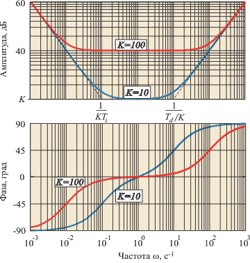
Рис. 5.36. АЧХ и ФЧХ ПИД-регулятора при =1 с, =1 с, =10 и =100
где - передаточная функция замкнутой системы.
На систему автоматического регулирования могут воздействовать внешние возмущения и шум измерений (рис. 5.35). Внешние возмущения (влияние нагрузки, изменение температуры окружающей среды, ветер, течение воды и т.п.) обычно распределены пространственно по объекту, однако для упрощения анализа их моделируют сосредоточенным источником , приложенным к входу или источником , приложенным к выходу объекта. Источник шума моделирует погрешность измерений выходной переменой , погрешность датчика, а также помехи (см. [Денисенко]), воздействующие на канал передачи сигнала с выхода системы на ее вход.
С учетом возмущающих воздействий и шума уравнение системы автоматического управления примет вид
Рассмотрим теперь несколько частных случаев.
П-регулятор
Пусть интегральная и дифференциальная компоненты отсутствуют, т.е. . Тогда из (5.40) получим и (5.42) можно преобразовать к виду
(5.43)
В установившемся режиме, при или передаточная функция процесса равна коэффициенту передачи . При этом выражение (5.43) преобразуется к виду
(5.44)
Как следует из полученной формулы, влияние возмущений d снижается с ростом петлевого усиления  и при обратно пропорционально коэффициенту регулятора . Однако проблема устойчивости не позволяет выбирать как угодно большим.
и при обратно пропорционально коэффициенту регулятора . Однако проблема устойчивости не позволяет выбирать как угодно большим.
Влияние помехи n также уменьшается с ростом петлевого усиления и пропорционального коэффициента регулятора. Дополнительно влияние помехи можно уменьшить применением экранирования, правильного заземления, витых пар, уменьшением длины проводников в цепи обратной связи и др., см. [Денисенко]).
При пренебрежимо малых помехах и внешних возмущениях погрешность П-регулятора  , как следует из (5.44), определяется величиной пропорционального коэффициента усиления:
, как следует из (5.44), определяется величиной пропорционального коэффициента усиления:
(5.45)
Эта погрешность обычно не может быть сделана как угодно малой путем увеличения усиления регулятора, поскольку с ростом сначала падает запас по фазе и усилению системы с обратной связью, что ухудшает ее робастность и качество регулирования, затем возникают периодические колебания (система теряет устойчивость), см. рис. 5.37. Поэтому в П-регуляторах для снижения погрешности используют метод компенсации. Для этого к входу объекта регулирования прикладывают компенсирующее воздействие , которое аддитивно добавляется к возмущению d, чтобы суммарное воздействие возмущения и компенсирующего воздействия стало равно . Отметим, что при изменении значения уставки компенсацию нужно выполнить заново, поскольку погрешность (5.45) пропорциональна (т.е. является мультипликативной), а компенсация в виде является аддитивной (не зависит от ).
Скомпенсировать погрешность можно также с помощью коррекции величины . Для этого управляющее воздействие после коррекции (обозначим его ), как следует из (5.44) и (5.45), должно иметь вид
(5.46)

Рис. 5.37. Изменение переменной во времени при подаче единичного скачка
на вход системы при разных
Переходный процесс в контуре с П-регулятором при и разных показан на рис. 5.37. При малых система имеет малое перерегулирование, но большую статическую погрешность (50%). С ростом погрешность уменьшается, но возрастает перерегулирование.
Объясняется поведение П-регулятора следующим образом. С ростом усиления вся АЧХ разомкнутой системы (АЧХ петлевого усиления , рис. 5.19) сдвигается вверх, в том числе возрастает усиление на частоте , где фазовый сдвиг в контуре с обратной связью равен 180˚. Это приводит к уменьшению запаса по фазе и усилению, возрастает колебательность и перерегулирование. Если петлевое усиление на частоте достигает 1, в системе устанавливаются незатухающие колебания. Подробнее описание этого процесса см. в разделе "Частотная идентификация в режиме релейного регулирования"
И-регулятор
Рассмотрим теперь случай, когда в ПИД-регуляторе остается только интегральный член, т.е.  и . Из (5.39) получим
и . Из (5.39) получим
(5.47)
Модуль и аргумент передаточной функции (5.47) равны
, (5.48)
АЧХ И-регулятора в логарифмическом масштабе представляет собой прямую линию с наклоном ‑20дб/дек во всем диапазоне частот, от 0 до , которая пересекает ось частот (проведенную при ) в точке . ФЧХ представляет собой горизонтальную линию с ординатой .
На низких частотах, при , коэффициент передачи регулятора (5.48) больше единицы и стремится к бесконечности при . Поскольку случаю во временной области соответствует , или установившийся (равновесный) режим для асимптотически устойчивых систем, то передаточная функция любого устойчивого объекта (за исключением объектов с интегрирующими процессами, см. раздел "Модели интегрирующих процессов") при будет равна статическому коэффициенту передачи . Поэтому, подставляя в (5.42) и , получим для системы с И-регулятором
 (5.49)
(5.49)
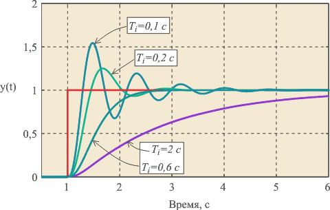
Рис. 5.38. Реакция на скачок замкнутой системы с объектом 2-го порядка (5.50)
с И-регулятором при и разных
Это означает, что система с И-регулятором не имеет ошибки в установившемся режиме.
Отметим аналогию между И-регулятором и операционным усилителем. Операционный усилитель (ОУ) имеет передаточную функцию вида , параметры которой для типовых микросхем ОУ равны , . Поэтому практически во всем рабочем диапазоне частот и передаточная функция ОУ описывается упрощенным выражением , т.е. совпадает с передаточной функцией И-регулятора. Схемы включения ОУ также подобны структурам систем управления с И-регулятором.
На рис. 5.38 показаны переходные характеристики замкнутой системы с И-регулятором и объектом второго порядка вида
(5.50)
где .
При больших постоянных интегрирования переходная характеристика имеет вид, сходный с характеристикой апериодического звена. С уменьшением растет усиление регулятора в соответствии с (5.48) и когда на частоте петлевое усиление контура с обратной связью приближается к 1, в системе появляются колебания (рис. 5.38, кривая ).
Вторым фактором, влияющим на устойчивость замкнутой системы, является дополнительный сдвиг фаз величиной -, вносимый И-регулятором в контур регулирования. Поэтому объект 1‑го порядка с малой транспортной задержкой, или объект 2-го порядка, устойчивый в контуре с П-регулятором, может потерять устойчивость в контуре с И-регулятором.
ПИ-регулятор
В ПИ-регуляторе только постоянная дифференцирования равна нулю, :
(5.51)
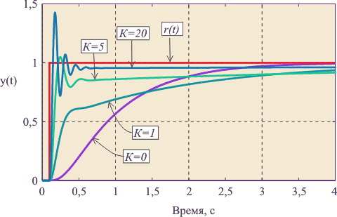
Рис. 5.39. Реакция замкнутой системы с ПИ регулятором на скачок
при для объекта вида (5.50) при
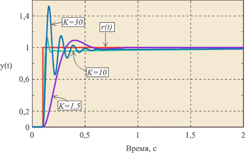
Рис. 5.40. Реакция замкнутой системы с ПИ регулятором на скачок
при для объекта вида (5.50) при
АЧХ ПИ-регулятора можно получить из рис. 5.36, если отбросить правую ветвь АЧХ с наклоном +20 дБ/дек. При этом сдвиг фаз на частотах выше 1 Гц (на рис. 5.36) не превысит уровень 0˚. Таким образом, ПИ-регулятор имеет два существенных положительных отличия от И-регулятора: во-первых, его усиление на всех частотах не может стать меньше , следовательно, увеличивается динамическая точность регулирования, во-вторых, по сравнению с И-регулятором, он вносит дополнительный сдвиг фаз только в области низких частот, что увеличивает запас устойчивости замкнутой системы. Оба фактора дают дополнительные степени свободы для оптимизации качества регулирования. В то же время, как и в И-регуляторе, модуль коэффициента передачи регулятора с уменьшением частоты стремится к бесконечности, обеспечивая тем самым нулевую ошибку в установившемся режиме. Отсутствие сдвига фаз на высоких частотах позволяет увеличить скорость нарастания управляемой переменной (по сравнению с И-регулятором) без снижения запаса устойчивости. Однако это справедливо до тех пор, пока пропорциональный коэффициент не станет настолько большой, что увеличит усиление контура до единицы на частоте .
Переходный процесс в ПИ-регуляторе при разных сочетаниях и показан на рис. 5.39, рис. 5.40. При (рис. 5.39) получаем И-регулятор. С ростом пропорционального коэффициента появляется дополнительная ошибка во время переходного процесса (см. также рис. 5.37 и (5.45)), которая уменьшается с ростом , однако при этом снижается запас устойчивости системы, поскольку с ростом увеличивается усиление на частоте . Это приводит к появлению затухающих колебаний в начале переходного процесса (рис. 5.39). Когда величина становится достаточно большой для компенсации ослабления сигнала в объекте на частоте , в системе появляются незатухающие колебания.
Следует отметить, что в отличие от П-регулятора, в котором ошибка остается в установившемся режиме, наличие интегрального члена в ПИ-регуляторе сводит эту ошибку в идеальном регуляторе до нуля, как в И-регуляторе. Выражение для ошибки ПИ-регулятора можно получить, подставив (5.51) в (5.41) и вычтя из полученного выражения :
(5.52)
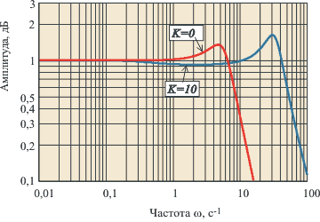
Рис. 5.41. АЧХ замкнутого контура с ПИ-регулятором при
для объекта вида (5.50) при
Как видим, при , т.е. в установившемся режиме, ошибка .
Однако появление пропорционального коэффициента приводит к затягиванию переходного процесса по сравнению с И-регулятором при тех же и , (рис. 5.39). Объясняется это тем, что в ПИ-регуляторе сигнал ошибки , поступающий на вход интегратора, меньше, чем в И-регуляторе (он уменьшается благодаря пропорциональному коэффициенту), поэтому сигнал, компенсирующий ошибку
нарастает медленнее, чем в И-регуляторе. В частотной области этот процесс можно объяснить тем, что с ростом полюс передаточной функции смещается влево (рис. 5.36), т.е. расширяется область частот, в которой интегральной составляющая пренебрежимо мала и ПИ-регулятор вырождается в чистый П-регулятор, для которого характерна статическая ошибка. В АЧХ замкнутой системы с большим (рис. 5.41) появляется погрешность (уменьшение амплитуды выходного сигнала) в диапазоне частот выше . С ростом эта частота сдвигается влево, что во временной области соответствует затягиванию процесса установления.
ПД-регулятор
Если в уравнении ПИД-регулятора положить , получим уравнение регулятора без интегрального члена (ПД-регулятор):
откуда следует, что на высоких частотах (в начале переходного процесса) ПД-регулятор имеет высокое усиление и, следовательно, точность, а в установившемся режиме (при ) он вырождается в П-регулятор со свойственной ему статической ошибкой. Если статическую ошибку скомпенсировать, как это делается в П-регуляторах, то возрастет ошибка в начале переходного процесса. Таким образом, ПД-регулятор по своим потребительским свойствам оказывается хуже П-регулятора, поэтому на практике он используется крайне редко. П-регулятор имеет только одно положительное свойство: он вносит в контур регулирования положительный фазовый сдвиг (рис. 5.36), что повышает запас устойчивости системы при малых . Однако с увеличением растет усиление регулятора на высоких частотах, и, когда петлевое усиление контура регулирования достигает единицы на частоте , система переходит в режим автоколебаний.
ПИД-регулятор
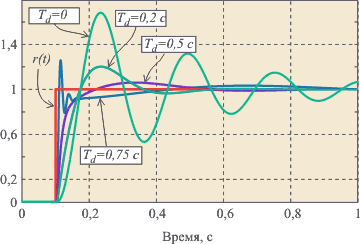
Рис. 5.42. Реакция замкнутой системы с ПИД регулятором на скачок
при , для объекта вида (5.50) при
ПИД-регулятор (5.40) можно получить добавлением дифференциального члена к ПИ-регулятору. Поэтому на ПИД-регулятор переносятся все свойства ПИ-регулятора и добавляются новые. Дифференциальный член, как следует из рис. 5.36, вносит положительный фазовый сдвиг до 90˚ на частотах выше . Это позволяет обеспечить устойчивость или улучшить качество регулирования системы в случаях, когда это невозможно сделать с помощью ПИ-регулятора.
На рис. 5.42 показано влияние постоянной дифференцирования на форму отклика замкнутой системы на скачок . Уменьшение амплитуды колебаний и увеличение коэффициента затухания с ростом постоянной дифференцирования объясняется тем, что благодаря положительному наклону АЧХ в области (см. рис. 5.36) уменьшается сдвиг фаз в контуре регулирования.
Дальнейшее увеличение постоянной дифференцирования (т.е. снижение частоты ) приводит к росту усиления ПИД-регулятора на высоких частотах, при (рис. 5.36). Поскольку фазовый сдвиг , связанный с транспортной задержкой (см. раздел "Модели объектов управления"), неограниченно увеличивается с ростом частоты, то при увеличении усиления в связи с ростом всегда наступает момент, когда петлевое усиление системы на частоте фазового сдвига 180˚ превысит единицу. При этом на переходной характеристике замкнутой системы сначала появляются затухающие колебания (кривая ), затем, при дальнейшем увеличении , система переходит в колебательный режим.